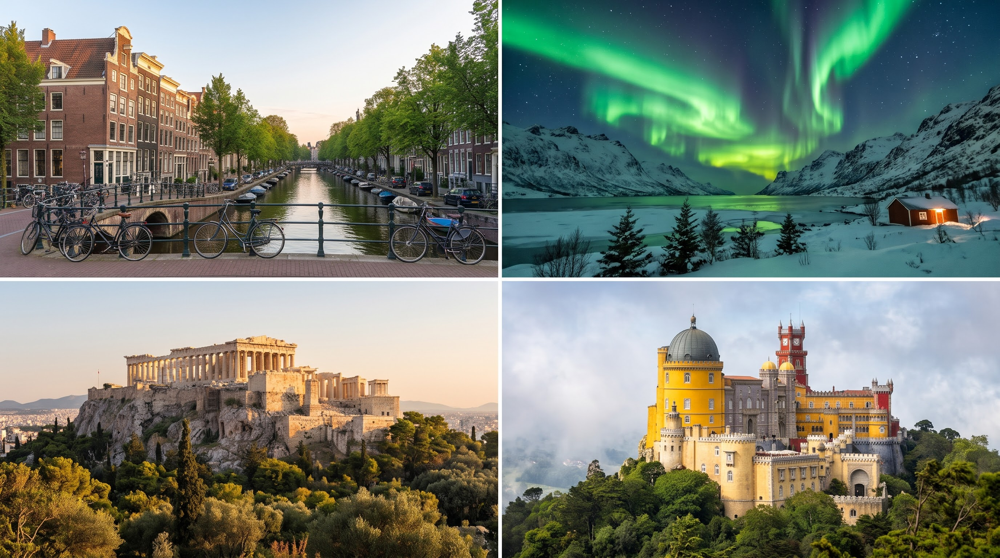

Viaja sin limites
La mejor web de viajes
Planea, vive y recuerda todos tus viajes


Un viaje a los Países Bajos es una inmersión en paisajes de postal y un estilo de vida relajado e innovador. Descubre el encanto de Ámsterdam recorriendo sus icónicos canales y visitando museos de clase mundial como el Rijksmuseum y el Museo Van Gogh. Explora la arquitectura futurista de Rotterdam, piérdete entre los campos de tulipanes en flor de Keukenhof durante la primavera, y fotografíate frente a los históricos molinos de viento en Zaanse Schans y Kinderdijk. Un destino ideal para recorrer a pie o en bicicleta.
Noruega es el destino definitivo para los amantes de la naturaleza y las grandes aventuras. Navega por sus imponentes fiordos declarados Patrimonio de la Humanidad, como el Geirangerfjord y el Nærøyfjord, encajonados entre montañas majestuosas y cascadas cristalinas. Recorre la histórica ciudad costera de Bergen con su pintoresco barrio de madera de Bryggen, adéntrate en la vibrante capital Oslo, o viaja hacia el norte, a las Islas Lofoten y Tromsø, para presenciar la magia de las auroras boreales en invierno o el sol de medianoche en verano.
Grecia ofrece una combinación perfecta entre historia milenaria y descanso en playas de ensueño. En Atenas, la majestuosa Acrópolis te conectará directamente con la Antigüedad Clásica. En el interior, los increíbles monasterios de Meteora, construidos sobre altísimas rocas, ofrecen uno de los paisajes más impactantes del continente. Para rematar, sus célebres islas —con las icónicas casas blancas y cúpulas azules de Santorini, la animación de Miconos o las playas vírgenes de Creta— invitan a relajarse frente al mar Egeo.
Portugal enamora por su hospitalidad, su rica gastronomía y su atmósfera nostálgica y acogedora. Explora los barrios tradicionales de Lisboa al ritmo del fado y recorre los palacios de cuento de hadas en la mágica Sintra. Rumbo al norte, Oporto invita a pasear a orillas del río Douro y degustar sus famosos vinos en bodegas centenarias. Al sur, la región del Algarve deslumbra con sus espectaculares acantilados dorados, cuevas marinas como Benagil y extensas playas atlánticas perfectas para el descanso o el surf.